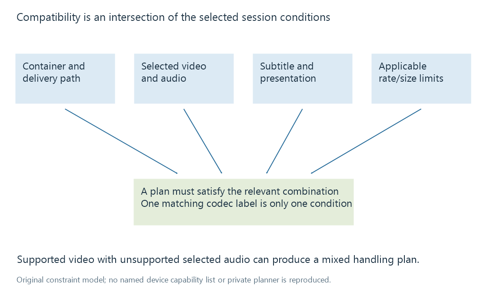

What determines playback compatibility?
Playback compatibility depends on the selected source and tracks, decoding and presentation capabilities, delivery constraints and the actual playback environment.
“Supports H.264” answers one part of a playback question. A source also has a container, codec parameters, resolution, frame rate, colour presentation and selected audio/subtitle streams. The delivery path adds its own constraints.
Compatibility is the agreement among those properties and the particular player environment. A file extension or a device's product name cannot represent the whole agreement.
The checks intersect

For a fictional playback environment, assume that MP4, H.264 8-bit 1080p and stereo AAC are accepted, and that the chosen delivery limit is 12 Mbit/s. These are invented conditions, not a support promise for a named Emby app.
| Selected source | Relevant result under those assumptions |
|---|---|
| MP4, accepted video, stereo AAC, within limit | Fits the stated original-playback conditions |
| Another container, accepted video/audio | Packaging can be the remaining mismatch |
| Accepted video, selected AC-3 audio not accepted by this path | Audio needs another supported representation |
| Higher-resolution or unsupported video parameters | Video processing can be needed |
| Subtitles that must be rendered into pictures | The video pixels must change |
A real decision can involve more conditions and more available alternatives. The table explains why a single successful check cannot imply success for the whole source.
Codec names omit parameters
A codec family can contain several profiles, levels, bit depths, chroma formats and reference-picture requirements. A decoder's support can be narrower than the family name.
The chosen delivery path also matters. A native player and a browser on the same computer can use different container parsers, decoders and subtitle renderers. Hardware capability alone does not establish that both applications expose it in the same way.
Emby's public profile model separates container, codec and subtitle profiles. Its conversion-reason identifiers likewise distinguish several kinds of mismatch. That structure reflects the need for more than one generic “supported” flag.
The selected tracks change the problem
Suppose a source contains compatible stereo AAC and another surround track that this path cannot use. Selecting stereo can produce one media plan; selecting the surround track can produce another.
Similarly, a text subtitle that the app renders separately differs from a bitmap subtitle that must be burned into video. The second operation changes the pictures, even when the original video codec was already accepted.
Track selection is therefore evidence about the current session. Merely listing every format present in a file does not tell us which one caused the observed path.
Acceptance, smoothness and presentation
A representation can be accepted by a decoder but too demanding to present smoothly under current load. It can decode while the display path needs another colour interpretation, or while an audio output route has different capabilities.
The W3C Media Capabilities draft distinguishes support from predicted smoothness and power efficiency for a specified configuration. Those are different answers; the API is not proof of current network throughput or perfect behavior throughout a particular movie.
Changing the bitrate setting can request another representation, but it does not create decoder support for an unsupported codec. Conversely, upgrading a decoder does not make a slow delivery path faster.
Match the evidence to the session
The useful compatibility description identifies the actual source, selected tracks, app/player path and limits. If any of those change, the earlier result may no longer describe the same test.
See Also
- Client playback capabilities
- Direct Play in Emby
- Direct Stream in Emby
- Video transcoding in Emby
- Containers and Codecs
- Subtitle delivery in Emby